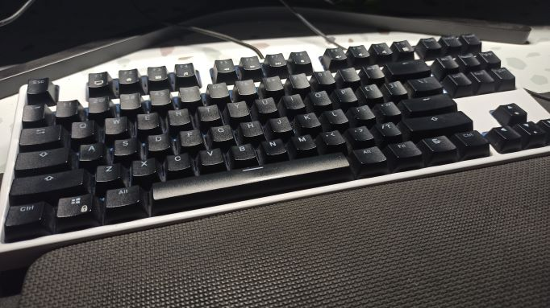
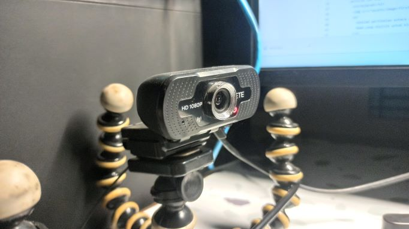

C.P.U (Central Processing Unit)
CPU ini digunakan untuk keperluan sehari-hari seperti nugas, nonton, ngegame, ngedit, dan "nge" lainnya. CPU ini merupakan CPU Rakitan.
Spesifikasi CPU ini adalah sebagai berikut:
- Prosesor Intel Xeon E3-1230 v2
- Motherboard Asrock H67M
- RAM Corsari 16 GB (2 keping)
- VGA Sapphire RX570
- PSU Enermax RevoBron Semi Modular
- SSD 500 GB Team
- HDD 80 GB Seagate
Komponen-komponejn diatas dicicil pembeliannya. Untuk casing sendiri merupakan casing bekas dari CPU sebelumnya yang sudah rusak. Tidak ada fasilitas cable management pada casingnya.
Spesifikasi diatas sudah memenuhi kebutuhan saya. Walaupun sekarang ini prosesor terbaru sudah keluar dari Intel dan AMD, namun aktifitas yang saya lakukan di depan komputer tidak membutuhkan komputasi sebesar itu, kecuali kalau ngoding android..
Keyboard

Keyboard yang saya gunakan adalah keyboard mekanik wireless. Keyboard ini dibeli secara online melalui tokped. .
Keyboard ini menggunakan brown switch dari merek "CONTENT". Ini memang bukan merupakan merek terkenal tapi saya suka typing feelnya. Switchnya telah di lube menggunakan krytox. Casingnya juga sudah dicat menjadi warna putih (aslinya hitam) dan juga sudah menggunakan sound dampener dalam casenya. Koneksinya bisa menggunakan kabel bisa juga menggunakan wireless 2.4GHz
Pada saat itu, ini merupakan keyboard mekanik wireless yang paling murah yang saya temukan di marketplace online. Dan saya putuskan untuk membeli perangkat ini.
Webcam

Pada zaman pandemi, webcam merupakan salah satu perangkat yang paling dibutuhkan untuk meeting maupun kuliah. Pada saat itu saya membeli sebuah webcam murah dari Merek JETE. Namun walaupun webcam ini adalah webcam murah, kualitas gambar yang dihasilkan tidak murahan. Saya puas menggunakan webcam ini.
Tidak banyak yang bisa diceritakan dari webcam ini selain kualitas gambarnya yang cukup bagus bagi saya.